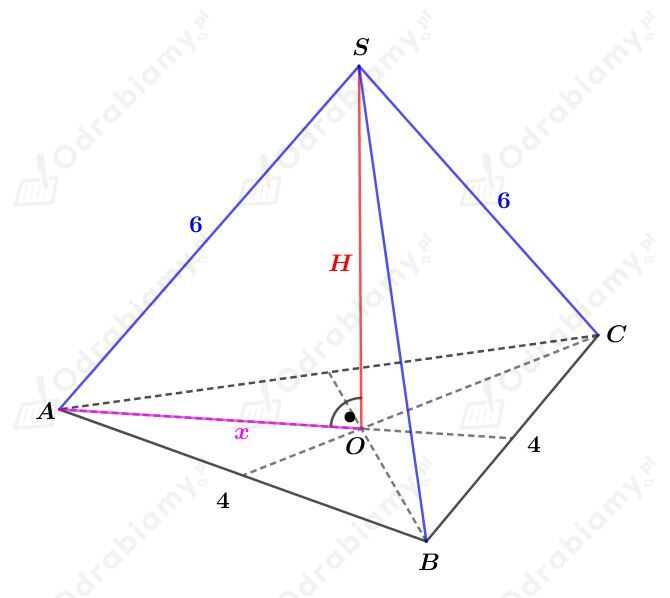
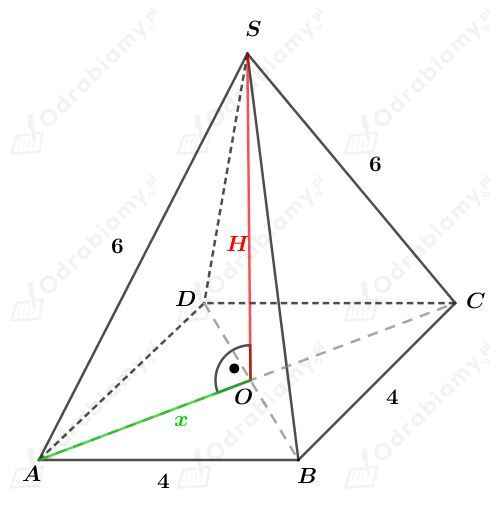
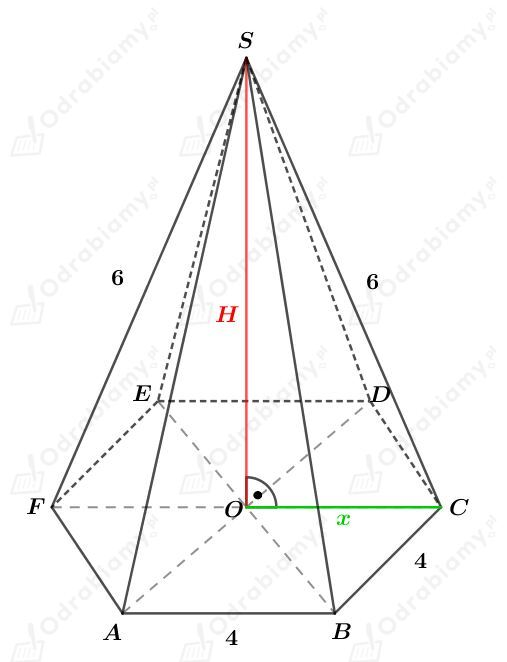
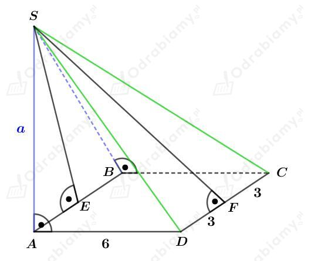
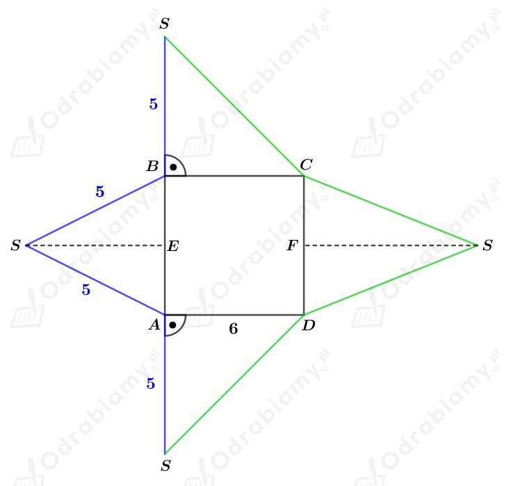
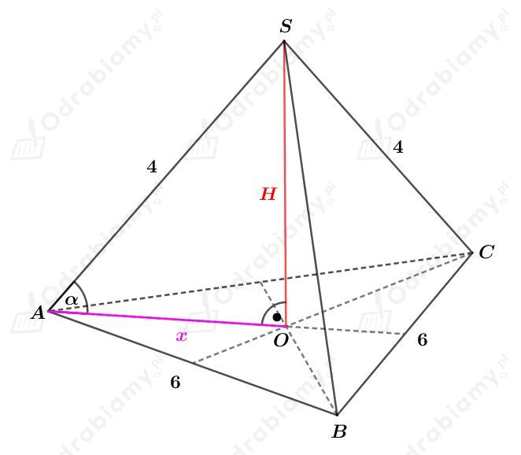
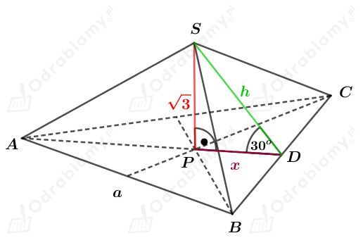

Dany jest graniastosłup prawidłowy o wysokości 10.
Promień okręgu opisanego na podstawie tego graniastosłupa ma długość 6.
a)
Podstawą tego graniastosłupa jest trójkąt równoboczny o boku długości a.
Długość promienia okręgu opisanego na trójkącie równobocznym stanowi 2/3 długości wysokości tego trójkąta. Mamy więc:
Wyznaczmy pole powierzchni podstawy tego graniastosłupa. Korzystając ze wzoru na pole trójkąta równobocznego mamy:
Wyznaczmy pole powierzchni bocznej tego graniastosłupa. Mamy:
Wyznaczmy pole powierzchni całkowitej tego graniastosłupa. Mamy:
b)
Podstawą tego graniastosłupa jest kwadrat o boku długości a.
Długość promienia okręgu opisanego na kwadracie stanowi połowę długości przekątnej tego kwadratu. Mamy więc:
Wyznaczmy pole powierzchni podstawy tego graniastosłupa. Mamy:
Wyznaczmy pole powierzchni bocznej tego graniastosłupa. Mamy:
Wyznaczmy pole powierzchni całkowitej tego graniastosłupa. Mamy:
c)
Podstawą tego graniastosłupa jest sześciokąt foremny o boku długości a.
Długość promienia okręgu opisanego na sześciokącie foremnym jest równa długości boku tego sześciokąta. Mamy więc:
Wyznaczmy pole powierzchni podstawy tego graniastosłupa. Korzystając ze wzoru na pole trójkąta równobocznego mamy:
Wyznaczmy pole powierzchni bocznej tego graniastosłupa. Mamy:
Wyznaczmy pole powierzchni całkowitej tego graniastosłupa. Mamy:
a)
Rysunek:

Długość odcinka x stanowi 2/3 długości wysokości trójkąta równobocznego będącego podstawą tego ostrosłupa. Mamy stąd:
Wyznaczmy długość wysokości H tego ostrosłupa. Korzystając z twierdzenia Pitagorasa dla trójkąta AOS otrzymujemy:
b)
Rysunek:

Długość odcinka x stanowi połowę długości przekątnej kwadratu będącego podstawą tego ostrosłupa. Mamy stąd:
Wyznaczmy długość wysokości H tego ostrosłupa. Korzystając z twierdzenia Pitagorasa dla trójkąta AOS otrzymujemy:
c)
Rysunek:

Długość odcinka x jest równa długości boku sześciokąta będącego podstawą tego ostrosłupa. Mamy stąd:
Wyznaczmy długość wysokości H tego ostrosłupa. Korzystając z twierdzenia Pitagorasa dla trójkąta OCS otrzymujemy:
Dany jest ostrosłup przedstawiony na rysunku:

Narysujmy siatkę tego ostrosłupa. Mamy:

Wyznaczmy pole powierzchni podstawy tego ostrosłupa. Mamy:
Trójkąty BCD i ADS są trójkątami przystającymi. Mamy więc
Wyznaczmy długość wysokości SE trójkąta ABS. Korzystając z twierdzenia Pitagorasa dla trójkąta AES mamy:
czyli
Wyznaczmy długość krawędzi SC. Korzystając z twierdzenia Pitagorasa dla trójkąta BCS mamy:
Wyznaczmy długość wysokości FS trójkąta CDS. Korzystając z twierdzenia Pitagorasa dla trójkąta DFS mamy:
czyli
Wyznaczmy pole powierzchni całkowitej tego ostrosłupa. Mamy:
Rysunek:

a)
Długość odcinka x stanowi 2/3 długości wysokości trójkąta równobocznego będącego podstawą tego ostrosłupa. Mamy stąd:
Rozważmy trójkąt prostokątny AOS. Korzystając z funkcji cosinus mamy:
czyli
b)
Rozważmy trójkąt prostokątny AOS. Korzystając z funkcji sinus mamy:
Wyznaczmy objętość tego ostrosłupa. Mamy:
Rysunek:

Rozważmy trójkąt prostokątny PDS. Korzystając ze związku między długościami boków w trójkącie o kątach 30o, 60o, 90o mamy:
oraz
Długość odcinka x stanowi 1/3 długości wysokości trójkąta równobocznego będącego podstawą tego ostrosłupa. Mamy stąd:
Wyznaczmy pole powierzchni bocznej tego ostrosłupa. Mamy:
Wyznaczmy objętość tego ostrosłupa. Mamy: